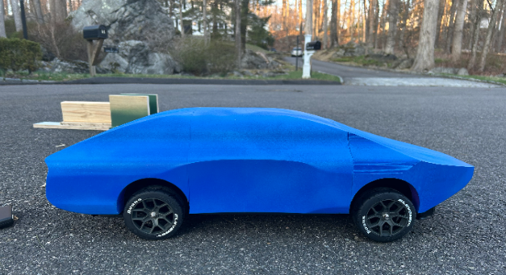
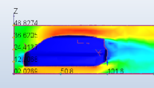
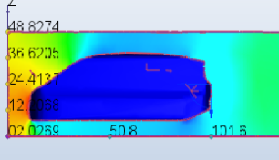
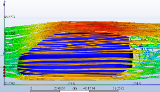
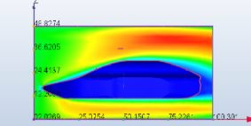
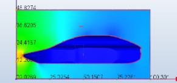
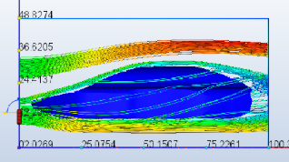
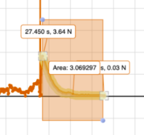
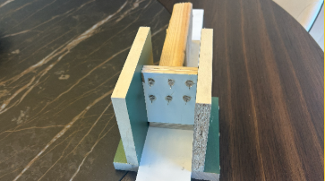
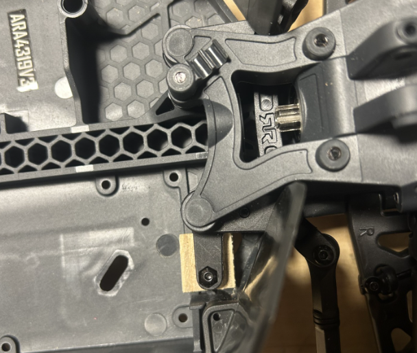

Integration of a homemade biofuel with a phsyical model of a road vehicle optimized for drag reduction.

Final Car Model
Overview
This project focused on the integration of homemade biofuel fuel with a road-vehicle optimized for
drag reduction. My work on the project centered around vehicle design, construction, and testing. I
CADed three vehicle models, analyzed their aerodynamic performance in Autodesk CFD, and constructed
the model I deemed most aerodynamically efficient. I completed this project in my senior year of high
school.
For all three vehicles, I constructed their CAD models based on images I found of the three vehicles
online. The CFD simulations were all run with an air velocity of 40 mph at the inlet, a pressure of 0
pascals at the outlet, airflow under no-slip conditions, incompressible and turbulent flow, and automatic
meshing.
Problem
Vehicle carbon emissions are a huge contributor to global climate change. Our goal was to test the efficiency
of a homemade biofuel compared with standard pump diesel on a road vehicle optimized for drag reduction.
Model 1: Armma Vendetta RC Car
CAD Model of Armma Vendetta RC Car
CFD Results
Vendetta Air Velocity CFD Results
Vendetta Air Pressure CFD Results
Vendetta Air Streamlines CFD Results
Autodesk computed the Armma Vendetta RC Car to generate approximately 23 newtons of drag in the given conditions,
making it the second-best performning vehicle of the three. Potential causes for the drag were qualitatively determined
to be the slight adverse pressure gradient at the front of the car and the flow separation at the back.
Model 2: Mercedes-Benz Boxfish Car
CAD Model of Mercedes-Benz Boxfish Car
CFD Results

Boxfish Car Air Velocity CFD Results

Boxfish Car Air Pressure CFD Results

Boxfish Car Air Streamlines CFD Results
Autodesk computed the Boxfish car to have a drag of 53 newtons, making it the worst
performer. This large amount drag was qualitatively determined to be due to the
adverse pressure gradient over the top of the vehicle and the flow separation behind
the vehicle.
Model 3: Venegas et al. Mako Shark Car Car
CAD Model of Mako Shark Car
CFD Results

Mako Shark Car Air Velocity CFD Results

Mako Shark Car Air Pressure CFD Results

Mako Shark Car Air Streamlines CFD Results
Autodesk computed the Mako Shark Car to generate 18 newtons of drag. This vehicle was
the best performing car quantitatively, which I determined qualitatively to be due to
the lack of flow separation behind the car.
Vehicle Construction and Testing
Canister Testing
We began by setting parameters for our vehicle. Using the Armma Vendetta RC Car Chassis as our base,
we determined we could fit six CO2 canisters on the back of our vehicle. We then conducted a series
of twenty trials to measure the average impulse of the canisters (3.4 N/s) and determined our vehicle
could not exceed a mass of 2.9 kg.

Results from a canister trial
Trigger Mechanism
Initially, I attempted to make a valve to control the release of the CO2 from the canisters, but due
to the small-size of the canister and the precision of the tools I had available, I was unable to
construct an effective nozzle. I instead switched to simple puncture mechanism, pictured below.
CAD for Potential Nozzle Design
Failed Physical Nozzle

Trigger Mechanism
Car Test
The vehicle body was 3D-printed and attached to the Armma Vendetta RC Car Chasis, which I stripped
of excess parts to reduce weight and modified with a wheel-locking mechanism to prevent turning.

Wheel Locking Mechanism
Car Test
As evident in the short video, the final vehicle moved too slowly for us to validate the CFD data.
However, we were still able to compare the efficiency of the biofuel with standard pump diesel.
Results
During the car test, only two of the six canisters ended up puncturing during each trial. From the car tests,
we concluded that 93.5% of the work done by the canisters was lost to friction, as our average measured top speed
was 0.29 mph whereas our theoretical top speed was 5.68 mph.
Two CO2 canisters contained 33.04 g of CO2. Using calorimetry data my partner collected from his biofuel and standard pump
diesel, we found the energy contained in an equivalent mass of both biofuel and standard pump diesel. We then assumed only 40% of
this energy would end up as useful work, accounting for inefficieny of an internal combustion engine that would be needed to ignite
the fuel. After then accounting for the work that we determined would be lost to friction from the car tests, we determined that the
car speed with the biodiesel would be 70.0 mph and the car speed with the standard diesel would be 89.0 mph, indicating that our
biodiesel was less efficient than standard pump diesel. Notably, at these speeds air resistance would become relevant, so these
calculated speeds are likely higher than they would be in reality.
Challenges
Creating test environments that gave useful and repeated measurements
Designing subsystems that were manufaturable based on the precision of available equipment
Validating simulation results with real life data
Lessons Learned
More test trials gave more precise data which allowed us to better inform our design decisions
Avoiding design fixation: roughly five nozzles were prototyped for the canisters (all with the same manufacturing issues), and I could have saved more
time if I brainstormed other ignition possibilities earlier